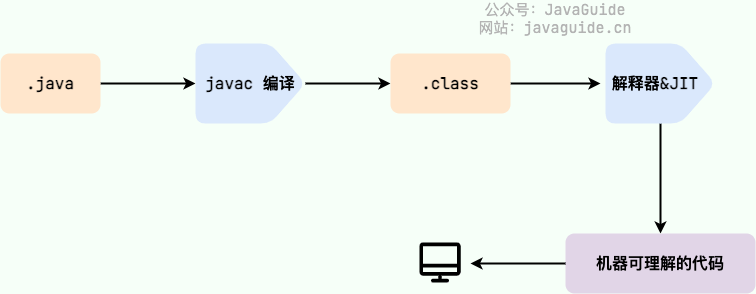

Java Base
Java基础
0. 一些问题
1. Java的语言产品为JDK，JDK组成
- JVM
- 核心类库
- JRE = JVM+核心类库
- java开发工具
- JDK = JRE + java开发工具

2. Long term Support： JDK-8（开发环境） JDK-11 JDK17（教学阶段）
3. java 是执行工具 javac是编译工具
4. win问题
- 文件扩展名问题
- 环境变量：用于在命令行任意目录启动程序。
5. Java跨平台：编译一次，处处可用
6. 方法重载：在一个类中，多个方法的名称相同，但是形参列表不同，称这些方法重载。
- 形参个数、类型、顺序不同
- 与返回值无关，只要名称相同，形参列表不同，即为方法重载
7. 为什么要打包 package
- 将相似的功能放在同一个包里方便使用
- 分开相同名称的类
- shopping.List
- Packing.List
8. 特殊的类
所有类都可以看到相同包下的其他类，不需要导入
所有类都可以看到在java.lang中的类

9. TreeSet和HashSet的区别
- HashSet基于哈希表实现，数据无序，允许null，使用equalTo()方法进行比较。
- TreeSet基于红黑树实现，可以保持数据排序（根据Comparable method进行排序，默认升序）。不允许null，并且会throw NullPointerException，因为Tree使用compareTo()方法进行比较，compareTo()会抛出异常。搜索、插入、删除、higher()、floor()、ceiling()等操作时间复杂度为O(log n)
- When to prefer TreeSet over HashSet
- TreeSet 需要排序的唯一元素，而不是唯一元素。 TreeSet 提供的排序列表总是以升序排列。
- TreeSet 比 HashSet 具有更强的局部性。如果两个条目在顺序上相邻，那么 TreeSet 会将它们放在数据结构中相邻的位置，从而放在内存中，而 HashSet 则会将条目分散到整个内存中，而不管它们与哪个键相关联。
- TreeSet 使用红黑树算法对元素进行排序。 当需要频繁执行读/写操作时，TreeSet 是一个不错的选择。
- LinkedHashSet 是介于这两种数据结构之间的另一种数据结构。 它提供像 HashSet 一样的时间复杂性，并保持插入顺序（注意，这不是排序顺序，而是元素插入的顺序）。
10. TreeMap和HashMap
- HashMap 不会根据键或值保持任何顺序，如果我们希望键保持排序，则需要使用 TreeMap。
- 复杂性：get/put/containsKey() 操作的平均值为 O(1)，但我们不能保证这一点，因为这完全取决于计算散列所需的时间。
- 应用： HashMap 基本上是散列的一种实现。 因此，只要我们需要使用键值对进行散列，就可以使用 HashMap。 例如，在网络应用程序中，用户名作为键存储，而用户数据作为值存储在 HashMap 中，以便更快地检索与用户名相对应的用户数据。
- 对于添加、删除、包含键等操作，时间复杂度为 O(log n)，其中 n 是 TreeMap 中元素的数量。
- TreeMap 始终保持元素排序（递增），而 HashMap 中的元素没有顺序。 TreeMap 还为键的首数、尾数、下限和上限提供了方法。

- 概述：
- HashMap 实现 Map 接口，而 TreeMap 实现 SortedMap 接口。 Sorted Map 接口是 Map 的子接口。
- HashMap 实现了 Hashing，而 TreeMap 实现了 Red-Black Tree（一种自平衡二叉搜索树）。 HashMap 和 TreeMap 都有对应的 HashSet 和 TreeSet。
- HashSet 和 TreeSet 实现了 Set 接口。 在 HashSet 和 TreeSet 中，我们只有键，没有值，它们主要用于查看集合中是否存在。 对于上述问题，我们不能使用 HashSet（或 TreeSet），因为我们不能存储计数。 与 HashMap（或 TreeMap）相比，我们更倾向于使用 HashSet（或 TreeSet）的一个例子是打印数组中所有不同的元素。

11. 无法直接访问私有变量的情况
- 跨类访问：如果你在另一个类中尝试访问
Person类的age字段，将会因为访问控制而无法访问。例如：
1 | |
不同包中的类：如果
Person类和另一个类在不同的包中，且该字段是私有的，同样无法直接访问。接口和抽象类：在实现接口或继承抽象类时，私有字段无法被子类直接访问。
反射以外的情况：尽管使用反射可以访问私有字段，但这通常不被推荐，因为它会破坏封装性。
Java中的接口（Interface）是一种引用数据类型，是类的一种特殊形式。它用于定义一组方法的契约，类可以通过实现接口来承诺提供具体的行为。下面是Java接口的主要特性：
1. 抽象性
接口只定义方法的签名，不提供方法的实现。这意味着接口中的方法都是抽象的，类必须实现这些方法。
2. 多重继承
Java不支持类的多重继承，但一个类可以实现多个接口。这使得接口成为一种灵活的方式来设计系统的行为。
1
2
3
4
5
6
7
8
9
10
11
12
13
14
15
16
17
18
19public interface A {
void methodA();
}
public interface B {
void methodB();
}
public class C implements A, B {
@Override
public void methodA() {
System.out.println("Method A implementation");
}
@Override
public void methodB() {
System.out.println("Method B implementation");
}
}3. 常量
接口可以定义常量，常量是隐式
public static final的。这意味着所有实现该接口的类都可以访问这些常量。1
2
3public interface MyInterface {
int CONSTANT_VALUE = 100; // 隐式public static final
}4. 默认方法和静态方法
从Java 8开始，接口可以包含默认方法和静态方法：
默认方法：可以在接口中提供方法的默认实现，允许接口添加新方法而不影响现有实现。
1
2
3
4
5public interface MyInterface {
default void defaultMethod() {
System.out.println("Default method implementation");
}
}静态方法：可以在接口中定义静态方法，可以通过接口名直接调用。
1
2
3
4
5public interface MyInterface {
static void staticMethod() {
System.out.println("Static method implementation");
}
}
5. 函数式接口
Java 8引入了函数式编程，允许使用 Lambda 表达式来实例化接口。函数式接口是只包含一个抽象方法的接口。
1
2
3
4@FunctionalInterface
public interface MyFunctionalInterface {
void doSomething();
}6. 接口的继承
接口可以继承其他接口，可以通过多层继承来构建复杂的接口结构。
1
2
3
4
5
6
7public interface A {
void methodA();
}
public interface B extends A {
void methodB();
}7. 不支持构造函数
接口不能包含构造函数，因为它们不能被实例化。接口只能通过实现它的类来创建对象。
12. 什么是字节码?采用字节码的好处是什么?
在 Java 中，JVM 可以理解的代码就叫做字节码（即扩展名为 .class 的文件），它不面向任何特定的处理器，只面向虚拟机。Java 语言通过字节码的方式，在一定程度上解决了传统解释型语言执行效率低的问题，同时又保留了解释型语言可移植的特点。所以， Java 程序运行时相对来说还是高效的（不过，和 C、 C++，Rust，Go 等语言还是有一定差距的），而且，由于字节码并不针对一种特定的机器，因此，Java 程序无须重新编译便可在多种不同操作系统的计算机上运行。
Java 程序从源代码到运行的过程如下图所示：

我们需要格外注意的是 .class->机器码 这一步。在这一步 JVM 类加载器首先加载字节码文件，然后通过解释器逐行解释执行，这种方式的执行速度会相对比较慢。而且，有些方法和代码块是经常需要被调用的(也就是所谓的热点代码)，所以后面引进了 JIT（Just in Time Compilation） 编译器，而 JIT 属于运行时编译。当 JIT 编译器完成第一次编译后，其会将字节码对应的机器码保存下来，下次可以直接使用。而我们知道，机器码的运行效率肯定是高于 Java 解释器的。这也解释了我们为什么经常会说 Java 是编译与解释共存的语言 。

[!NOTE]
HotSpot 采用了惰性评估(Lazy Evaluation)的做法，根据二八定律，消耗大部分系统资源的只有那一小部分的代码（热点代码），而这也就是 JIT 所需要编译的部分。JVM 会根据代码每次被执行的情况收集信息并相应地做出一些优化，因此执行的次数越多，它的速度就越快。
JDK、JRE、JVM、JIT 这四者的关系如下图所示。

下面这张图是 JVM 的大致结构模型。

13. 测试
13.1 通过对输入\输出集划分进行测试用例选择
子域背后的理念是将输入空间划分为相似的输入集，程序在这些输入集上具有相似的行为。 然后，我们使用每个集合中的一个代表。 这种方法通过选择不同的测试用例来充分利用有限的测试资源，并迫使测试探索随机测试可能无法到达的输入空间部分。 如果我们需要确保我们的测试将探索输出空间的不同部分，我们也可以将输出空间划分为子域（程序具有相似行为的相似输出）。 大多数情况下，对输入空间进行划分就足够了。
13.2 在划分中涵盖输入输出集边界
bug经常发生在子集之间的边界
- 0 is a boundary between positive numbers and negative numbers
- the maximum and minimum values of numeric types, like
intanddouble - emptiness (the empty string, empty list, empty array) for collection types
- the first and last element of a collection
13.3 黑盒测试 & 白盒测试
Blackbox testing means choosing test cases only from the specification, not the implementation of the function. That’s what we’ve been doing in our examples so far. We partitioned and looked for boundaries in multiply and max without looking at the actual code for these functions.
Whitebox testing (also called glass box testing) means choosing test cases with knowledge of how the function is actually implemented. For example, if the implementation selects different algorithms depending on the input, then you should partition according to those domains. If the implementation keeps an internal cache that remembers the answers to previous inputs, then you should test repeated inputs.
13.4 覆盖率
Here are three common kinds of coverage:
- Statement coverage : is every statement run by some test case?
- Branch coverage : for every
iforwhilestatement in the program, are both the true and the false direction taken by some test case? - Path coverage : is every possible combination of branches — every path through the program — taken by some test case?
13.5 单元测试和桩 自动化测试和回归测试
14. Code Review
目的：
- 提升代码质量
- 提升程序员水平
养成自己的代码风格
Dont Repeat Yourself
15. Final 关键字
当数组变量被声明为final时，数组的引用是不可变的。
然而，final数组的内容是可以修改的。
1. 面向对象编程
1.1 封装、继承、多态
1.1.1 封装
1）什么是封装
封装从字面上来理解就是包装的意思，专业点就是信息隐藏，是指利用抽象将数据和基于数据的操作封装在一起，使其构成一个不可分割的独立实体。
数据被保护在类的内部，尽可能地隐藏内部的实现细节，只保留一些对外接口使之与外部发生联系。
其他对象只能通过已经授权的操作来与这个封装的对象进行交互。也就是说用户是无需知道对象内部的细节（当然也无从知道），但可以通过该对象对外的提供的接口来访问该对象。
使用封装有 4 大好处：
- 1、良好的封装能够减少耦合。
- 2、类内部的结构可以自由修改。
- 3、可以对成员进行更精确的控制。
- 4、隐藏信息，实现细节。
1.1.2 继承
1）什么是继承
Java 语言中继承就是子类继承父类的属性和方法，使得子类对象（实例）具有父类的属性和方法，或子类从父类继承方法，使得子类具有父类相同的方法。
2）继承的种类
单继承
单继承，一个子类只有一个父类，如我们上面讲过的 Animal 类和它的子类。单继承在类层次结构上比较清晰，但缺点是结构的丰富度有时不能满足使用需求。
多继承
Java 虽然不支持多继承，但是 Java 有三种实现多继承效果的方式，分别是内部类、多层继承和实现接口。
内部类可以继承一个与外部类无关的类，保证了内部类的独立性，正是基于这一点，可以达到多继承的效果。
**多层继承：**子类继承父类，父类如果还继承其他的类，那么这就叫**多层继承**。这样子类就会拥有所有被继承类的属性和方法。
实现接口无疑是满足多继承使用需求的最好方式，一个类可以实现多个接口满足自己在丰富性和复杂环境的使用需求。
类和接口相比，类就是一个实体，有属性和方法，而接口更倾向于一组方法。
3）实现继承
在 Java 中，类的继承是单一继承，也就是说一个子类只能拥有一个父类，所以extends只能继承一个类。其使用语法为：
1 | |
使用 implements 关键字可以变相使 Java 拥有多继承的特性，使用范围为类实现接口的情况，一个类可以实现多个接口(接口与接口之间用逗号分开)。
4）继承特点
构造方法
构造方法是一种特殊的方法，它是一个与类同名的方法。在继承中构造方法是一种比较特殊的方法（比如不能继承），所以要了解和学习在继承中构造方法的规则和要求。
继承中的构造方法有以下几点需要注意：
父类的构造方法不能被继承：
因为构造方法语法是与类同名，而继承则不更改方法名，如果子类继承父类的构造方法，那明显与构造方法的语法冲突了。比如 Father 类的构造方法名为 Father()，Son 类如果继承 Father 类的构造方法 Father()，那就和构造方法定义：构造方法与类同名冲突了，所以在子类中不能继承父类的构造方法，但子类会调用父类的构造方法。
子类的构造过程必须调用其父类的构造方法：
Java 虚拟机**构造子类对象前会先构造父类对象，父类对象构造完成之后再来构造子类特有的属性，**这被称为**内存叠加**。而 Java 虚拟机构造父类对象会执行父类的构造方法，所以子类构造方法必须调用 super()即父类的构造方法。就比如一个简单的继承案例应该这么写：
1 | |
如果子类的构造方法中没有显示地调用父类构造方法，则系统默认调用父类无参数的构造方法。
方法重写（Override）：外壳不变重写内容
方法重载（Overload）：不同方法命名相同
访问修饰符
访问修饰符用来控制访问权限，而非访问修饰符每个都有各自的作用，下面针对 static、final、abstract 修饰符进行介绍。
static 翻译为“静态的”，能够与变量，方法和类一起使用，称为静态变量，静态方法(也称为类变量、类方法)。如果在一个类中使用 static 修饰变量或者方法的话，它们可以直接通过类访问，不需要创建一个类的对象来访问成员。
源代码为：
1 | |
final 变量：
- final 表示”最后的、最终的”含义，变量一旦赋值后，不能被重新赋值。被 final 修饰的实例变量必须显式指定初始值(即不能只声明)。final 修饰符通常和 static 修饰符一起使用来创建类常量。
final 方法：
- 父类中的 final 方法可以被子类继承，但是不能被子类重写。声明 final 方法的主要目的是防止该方法的内容被修改。
final 类：
- final 类不能被继承，没有类能够继承 final 类的任何特性。
所以无论是变量、方法还是类被 final 修饰之后，都有代表最终、最后的意思。内容无法被修改。
abstract 英文名为“抽象的”，主要用来修饰类和方法，称为抽象类和抽象方法。
抽象方法：有很多不同类的方法是相似的，但是具体内容又不太一样，所以我们只能抽取他的声明，没有具体的方法体，即抽象方法可以表达概念但无法具体实现。
抽象类：有抽象方法的类必须是抽象类，抽象类可以表达概念但是无法构造实体的类。
向上转型
将子类实例赋值给父类变量
向上转型 : 通过子类对象(小范围)实例化父类对象(大范围)，这种属于自动转换。用一张图就能很好地表示向上转型的逻辑：

父类引用变量指向子类对象后，只能使用父类已声明的方法，但方法如果被重写会执行子类的方法，如果方法未被重写那么将执行父类的方法。
向下转型
将父类实例赋值给子类变量
向下转型 : 通过父类对象(大范围)实例化子类对象(小范围)，在书写上父类对象需要加括号()强制转换为子类类型。但父类引用变量实际引用必须是子类对象才能成功转型，这里也用一张图就能很好表示向下转型的逻辑：

子类引用变量指向父类引用变量指向的对象后(一个 Son()对象)，就完成向下转型，就可以调用一些子类特有而父类没有的方法 。
5）子父类初始化顺序
在 Java 继承中，父子类初始化先后顺序为：
- 父类中静态成员变量和静态代码块
- 子类中静态成员变量和静态代码块
- 父类中普通成员变量和代码块，父类的构造方法
- 子类中普通成员变量和代码块，子类的构造方法
总的来说，就是静态>非静态，父类>子类，非构造方法>构造方法。同一类别（例如普通变量和普通代码块）成员变量和代码块执行从前到后，需要注意逻辑。
这个也不难理解，静态变量也称类变量，可以看成一个全局变量，静态成员变量和静态代码块在类加载的时候就初始化，而非静态变量和代码块在对象创建的时候初始化。所以静态快于非静态初始化。
而在创建子类对象的时候需要先创建父类对象，所以父类优先于子类。
而在调用构造方法的时候，是对成员变量进行一些初始化操作，所以普通成员变量和代码块优于构造方法执行。
1 | |
1.1.3 多态（动态绑定）
Java 的多态是指在面向对象编程中，同一个类的对象在不同情况下表现出来的不同行为和状态。
- 子类可以继承父类的字段和方法，子类对象可以直接使用父类中的方法和字段（私有的不行）。
- 子类可以重写从父类继承来的方法，使得子类对象调用这个方法时表现出不同的行为。
- 可以将子类对象赋给父类类型的引用，这样就可以通过父类类型的引用调用子类中重写的方法，实现多态。
多态的目的是为了提高代码的灵活性和可扩展性，使得代码更容易维护和扩展。
比如说，通过允许子类继承父类的方法并重写，增强了代码的复用性。
再比如说多态可以实现动态绑定，这意味着程序在运行时再确定对象的方法调用也不迟。
1）什么是多态
多态的前提条件有三个：
- 子类继承父类
- 子类重写父类的方法
- 父类引用指向子类的对象
2）多态与后期绑定
答案是在运行时根据对象的类型进行后期绑定，编译器在编译阶段并不知道对象的类型，但是 Java 的方法调用机制能找到正确的方法体，然后执行，得到正确的结果。
3）多态与构造方法
在构造方法中调用多态方法，会产生一个奇妙的结果，我们来看程序清单 3-1：
1 | |
[!NOTE]
从输出结果上看，是不是有点诧异？明明在创建 Wangxiaosan 对象的时候，年龄传递的是 4，但输出结果既不是“老子上幼儿园的年龄是 3 岁半”，也不是“我小三上幼儿园的年龄是：4”。
为什么？
因为在创建子类对象时，会先去调用父类的构造方法，而父类构造方法中又调用了被子类覆盖的多态方法，由于父类并不清楚子类对象中的字段值是什么，于是把 int 类型的属性暂时初始化为 0，然后再调用子类的构造方法（子类构造方法知道王小二的年龄是 4）。
04、多态与向下转型
向下转型是指将父类引用强转为子类类型；这是不安全的，因为有的时候，父类引用指向的是父类对象，向下转型就会抛出 ClassCastException，表示类型转换失败；但如果父类引用指向的是子类对象，那么向下转型就是成功的。
来看程序清单 4-1：
1 | |